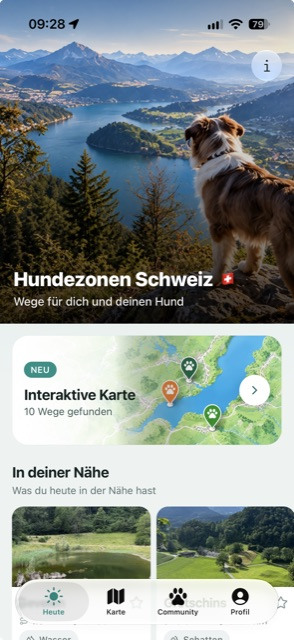
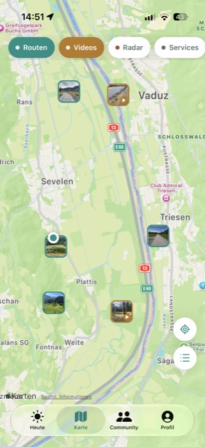
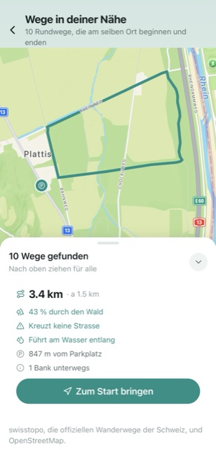
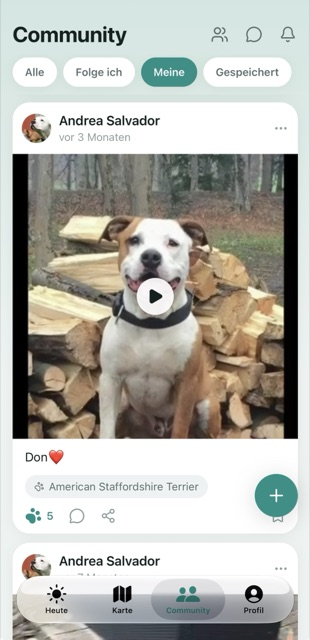
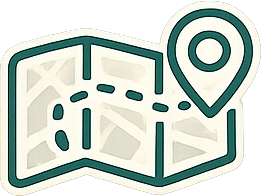
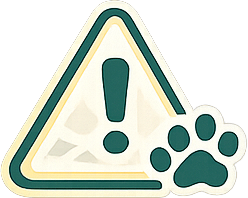
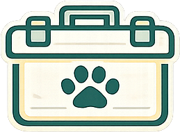
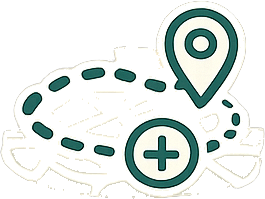
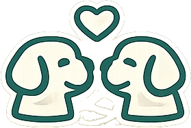
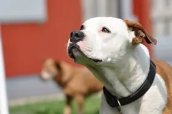

Rundwege, die auf keiner Karte stehen
Wir berechnen für deinen Standort Rundwege, die es so noch nirgends gibt – aus den offiziellen Wanderwegen von swisstopo und OpenStreetMap. Neu für die ganze Schweiz.
- 🧭 Immer eine Runde Start und Ziel am selben Ort, ohne denselben Weg zweimal.
- 🌲 Durch Wald und am Wasser Schattige Wege an Bächen und Seen – und weg von Strassen.
- 🅿️ Parkplatz am Start Jede Runde beginnt dort, wo du das Auto abstellen kannst.
- ➤ Antippen und loslaufen Runde auswählen und dich direkt zum Start navigieren lassen.
Kennst du das?
Gassi gehen sollte entspannt sein – ist es aber oft nicht.
Immer dieselbe Runde
Du läufst seit Monaten denselben Weg und weisst nicht, wo es schöne, hundefreundliche Alternativen gibt.
Angst vor Giftködern
Ausgelegte Giftköder sind eine reale Gefahr – aber du erfährst meist erst davon, wenn es zu spät ist.
Wo ist der nächste Service?
Tierarzt, Hundeschule, Auslaufzone oder Shop in der Nähe? Die Infos sind über zwölf Webseiten verstreut.
So sieht HundeZonen aus
Ein Blick in die App – vom täglichen Vorschlag bis zur Community.




Alles für den perfekten Spaziergang
Eine App statt zwölf offener Tabs – Routen, Sicherheit, Services und Community an einem Ort.

Routen entdecken
Hundefreundliche Spazierrouten in deiner Nähe – mit Karte, Distanz, Fotos und echten Bewertungen anderer Hundebesitzer.

Giftköder-Radar
Sieh auf einen Blick, wo Giftköder gemeldet wurden – und warne andere mit einem Tipp, wenn du etwas entdeckst.

Hunde-Services
Tierärzte, Hundeschulen, Shops und Auslaufzonen – alle Services rund um deinen Hund auf einer Karte.

Eigene Routen teilen
Lege deine Lieblingsrunde an, beschreibe sie und teile sie mit der Community. Sammle Likes und Favoriten.
Interaktive Karte
Rundwege ohne Strassen und immer am Wasser, berechnet aus den offiziellen Wanderwegen der Schweiz – auch dort, wo noch niemand eine Route eingetragen hat.

Community & Feed
Folge anderen Hundefreunden, teile Fotos und Videos deiner Spaziergänge und tausch dich aus – wie ein soziales Netzwerk für Hunde.
So funktioniert's
Route finden
Öffne die Karte und entdecke hundefreundliche Routen rund um deinen Standort.
Losgehen
Folge der Route, behalte den Giftköder-Radar im Blick und geniesse den Spaziergang.
Bewerten & teilen
Bewerte die Route, lade Fotos hoch und hilf anderen Hundebesitzern, die schönsten Wege zu finden.
Die neuesten Routen
Diese Spazierrouten wurden zuletzt von Hundebesitzern hinzugefügt – täglich kommen neue dazu.
Der Giftköder-Radar, der mitdenkt
Gemeldete Giftköder werden direkt auf der Karte angezeigt. Erhalte Warnungen für deine Region und melde selbst gefährliche Stellen – so schützen sich Hundebesitzer in der ganzen Schweiz gegenseitig.
- ✓ Echtzeit-Warnungen in deiner Nähe
- ✓ Mit einem Tipp neue Fundstellen melden
- ✓ Community-geprüft und immer aktuell
Das sagen Hundebesitzer wie du
★★★★★ 5,0 · 3 Bewertungen im App Store
Perfekte App für Hundebesitzer
★★★★★«Eine wirklich tolle App! Die Routen sind übersichtlich, leicht zu finden und super für Spaziergänge mit dem Hund. Besonders gefällt mir, dass man eigene Wege teilen kann und trotzdem volle Kontrolle über die Privatsphäre behält. Weiter so! 🐾🌟»
Super App!
«Super!»
Für die Schweiz gemacht
Rundwege, Tierärzte, Hundeschulen, Shops und Robidog-Stationen in der ganzen Schweiz und in Liechtenstein – aus Schweizer Quellen, auf einem Schweizer Server.
Sichtbar oder völlig unsichtbar
HundeZonen verkauft deine Daten nicht. Du entscheidest, wie du die App nutzt.
Öffentlicher Modus
Andere sehen dein Profil und deine veröffentlichten Routen. Du bist Teil der Community.
Privater Modus
Komplett inkognito. Niemand sieht dich, dein Profil oder deine Routen – nur du selbst.
Transparent und fair
Kostenlos nutzbar – mit optionaler Unterstützung für die Weiterentwicklung.
- ✓ Alle Routen entdecken und teilen
- ✓ Giftköder auf der Karte sehen
- ✓ Tierärzte, Hundeschulen und Shops
- ✓ Community und eigenes Profil
- ✓ Werbefrei
- ✓ Die interaktive Karte – Rundwege für deinen Standort
- ✓ Alle Videos: sieh den Weg, bevor du hinfährst
- ✓ Routen ohne Limit
- ✓ Giftköder-Mitteilungen für deine Region
Die erste Woche ist gratis. Kündigen jederzeit.
UnterstützenHäufige Fragen
Was ist HundeZonen?+
HundeZonen ist eine App, in der du deine Lieblingsrouten zum Gassi gehen mit deinem Hund speichern kannst. Ausserdem entdeckst du Routen, die andere Nutzer in deiner Nähe erstellt haben – mit allen Infos, die du vor dem Spaziergang brauchst.
Wie funktioniert es?+
Wenn du die App öffnest, erkennt sie automatisch deinen Standort und zeigt dir die nächstgelegenen Routen anderer Nutzer. Du siehst, ob es auf der Route Wasser, Schatten, Parkplätze, Restaurants oder andere nützliche Services gibt.
In welchen Ländern ist die App verfügbar?+
HundeZonen ist für die Schweiz und Liechtenstein gemacht: die Wege, die Tierärzte, die Hundeschulen und die Robidog-Stationen stammen alle aus Schweizer Quellen.
Was ist die interaktive Karte?+
Sie baut dir Rundwege, die an einem Parkplatz beginnen und dort wieder enden, aus den offiziellen Wanderwegen von swisstopo und aus OpenStreetMap. Zu jedem Weg siehst du, was gemessen wurde: Kilometer, Wald in Prozent, ob er eine Strasse kreuzt, ob er am Wasser entlangläuft und wie weit der Parkplatz entfernt ist. Die interaktive Karte ist Teil des Abos.
Woher kommen die Wege?+
Aus zwei offiziellen Quellen: den Wanderwegen von swisstopo, dem Bundesamt für Landestopografie, und aus OpenStreetMap. Daraus rechnen wir die Runden selbst – deshalb findest du auch dort etwas, wo noch niemand eine Route eingetragen hat. Die Routen der Community kommen von anderen Hundebesitzern.
Funktioniert die App ohne Empfang?+
Die Wege deiner Umgebung werden auf dem Handy gespeichert. Wenn du sie einmal geöffnet hast, kannst du sie später auch ohne Empfang wieder ansehen – praktisch genau dann, wenn du mit dem Hund draussen im Feld bist.
Was passiert mit meinem Standort?+
Er bleibt auf deinem Handy. Wir fragen damit nur, welche Wege in deiner Nähe liegen; wir speichern keine Bewegungsprofile und verkaufen keine Daten. Du kannst den Standort jederzeit in den Einstellungen deines Handys ausschalten – dann zeigt die Karte einfach die ganze Schweiz.
Sehen andere, wo ich spazieren gehe?+
Nur wenn du es willst. Du entscheidest bei jeder Route, ob sie öffentlich ist. Und im privaten Modus bist du für alle anderen komplett unsichtbar – dein Profil, deine Routen, alles.
Wie kündige ich das Abo?+
Jederzeit, direkt in den Einstellungen deines App-Store- oder Google-Play-Kontos. Es gibt keine Kündigungsfrist und keine Mindestlaufzeit. Die erste Woche ist gratis.
Ist HundeZonen kostenlos?+
Ja, die Grundnutzung ist komplett kostenlos. Es gibt ein optionales Abo, das die interaktive Karte, alle Videos, unbegrenzte Routen und die Giftköder-Mitteilungen freischaltet – und damit Server, Datenbank und Weiterentwicklung trägt. Die erste Woche ist gratis.

Für Don 🐾
Diese App ist mit ihm entstanden – und die ersten Wege darin sind seine. In Erinnerung an meinen treuen Begleiter.